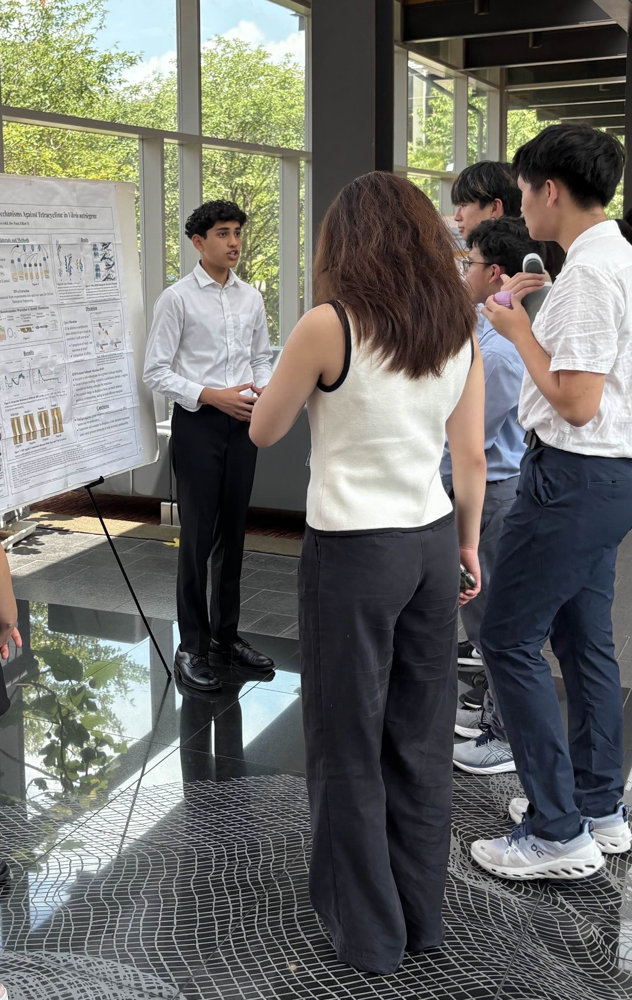

Dev Patel
The University of North Carolina at Chapel Hill

About Me
I never expected that learning about a metabolic process would lead me to the astonishing concept of gene therapy.
As my AP Chemistry teacher explained that ethanol, due to its zero-order kinetics, is metabolized at a rate determined by enzymes within our bodies, an ordinary day during sophomore year of high school suddenly initiated my odyssey to answer a burning question: In what ways, if any, can the enzymes that metabolize ethanol be optimized to induce an intolerance to alcohol?
With my curiosity piqued, I began learning about the specific enzymes catalyzing the two-step process of ethanol metabolism, finding that their performance depends on the genes that encode them. Consequently, I read about specific point mutations within these genes that can lead to optimal amino acid substitutions within the enzymes. This identification of optimal mutations eventually led me to discover the coveted answer to my question: CRISPR-Cas9, a technology that can precisely edit genes. Inspired by this innovative tool, I packaged this journey of discovery into a literature review proposing the potential for CRISPR-Cas9 to reduce the development of alcohol use disorder through the optimal editing of genes encoding ethanol-metabolizing enzymes.
By writing this literature review, I realized that learning the process of uncovering mutations and their therapeutic/pathogenic effects is essential to the design of the guide RNA within the CRISPR-Cas system, which targets a specific region of a gene to be cut/modified. Hence, I seized an opportunity to learn this process when I was selected to conduct bacterial genomics research at the Summer Science Program hosted at Lehigh University. Immediately, I was exposed to the alarming trend of bacterial antibiotic resistance outpacing the discovery of novel antibiotics, which is responsible for millions of deaths per year worldwide. To address this issue, I investigated the mechanisms by which Vibrio natriegen bacteria develop resistance to the antibiotic tetracycline. By performing PCR, bacterial transformations, DNA extraction, and genome analysis, I identified specific mutations in certain genes that supported the predictability of certain resistance mechanisms, particularly those involving optimized efflux pumps. Through this experience, I became equipped with an understanding of mutational analysis alongside the theoretical applications of CRISPR-Cas gene therapy. As a result, my interest shifted to learning about the possible delivery mechanisms for in vivo gene therapy.
This desire brings me to my current state as a first-year undergraduate at the University of North Carolina at Chapel Hill with a prospective major in Biomedical Engineering. Within my major, I will specialize in pharmacoengineering, where I can learn about various gene therapy delivery mechanisms, especially Adeno-Associated Viral Vectors (AAV). In conjunction, I hope to join one of the many labs at the Center of Molecular Medicine, where groundbreaking research is being done to understand the biology of AAV vectors in order to modulate their structure for more targeted gene therapy delivery. By contributing to this work as a student researcher, I will prepare myself for a career focusing on transforming gene therapy into a viable clinical treatment.

“The virtues of science are skepticism and independence of thought.” - Walter Gilbert

I present my antibiotic resistance research in front of Lehigh University faculty and students at the Summer Science Program. July 2025.